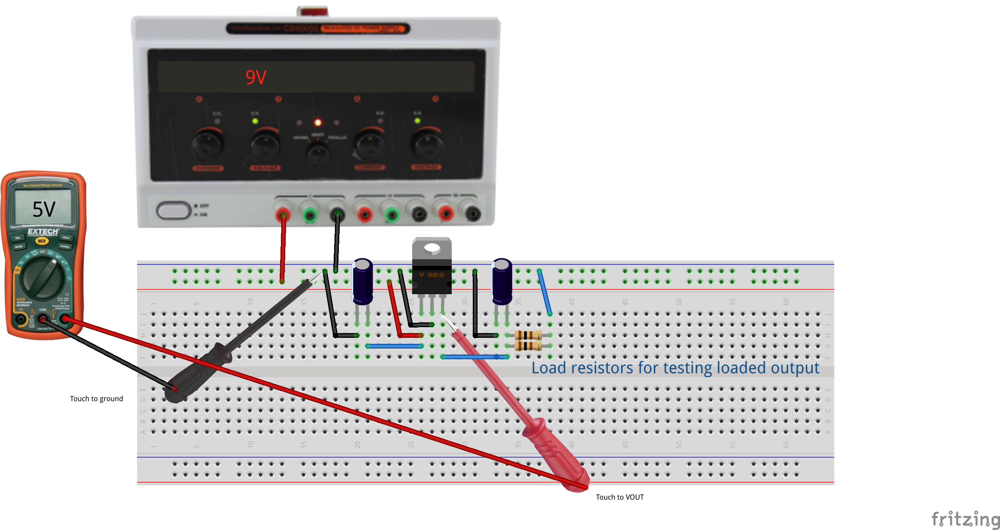
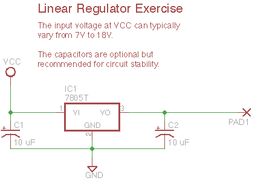

Test different types of voltage regulation components.
Power supplies are the heart of any electronics project, as every circuit needs a source of energy, and usually with very specific electrical characteristics. Most of our circuits will require regulated DC supplies, with energy coming either from a battery or the building electrical system. Unless otherwise specified, regulated means the voltage is controlled to a constant level despite changes in the load.
In this exercise we will look at linear voltage regulators, and in a later exercise we will look at switching regulators.
In brief, a linear regulator acts as a variable resistor governed by feedback to keep the output voltage at a fixed level. Linear regulators can only step voltages down, and the excess energy is dissipated as heat. So for example, a 5V linear regulator providing a 500 mA current from a 12V supply creates a 7V voltage drop. That represents 3.5 Watts of heat dissipated in the package, which typically means the package needs a good heatsink to carry that heat away.
In the example of a linear regulator, the the load is only consuming 2.5 Watts of energy while the regulator dissipates 3.5 Watts, so this circuit is operating at only 42% efficiency. Linear regulator circuits are simple to use and inexpensive, so they are applicable for low-power applications or where efficiency and heating are not a problem. The primary advantage is they are potentially low-noise compared to switching regulators, so they often appear in high-fidelity audio applications.
A good debugging heuristic for any project is to begin solving problems by checking the power supply. There are many, many possible problems, so for example:
The diagram shows a 7805 in the common TO-220 leaded package, which has the following connections:
 
- Input
- Ground (also connected to heatsink tab)
- Output